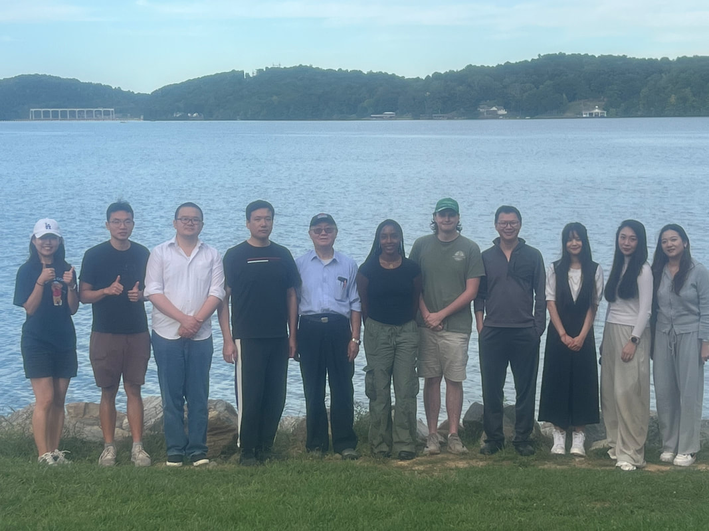
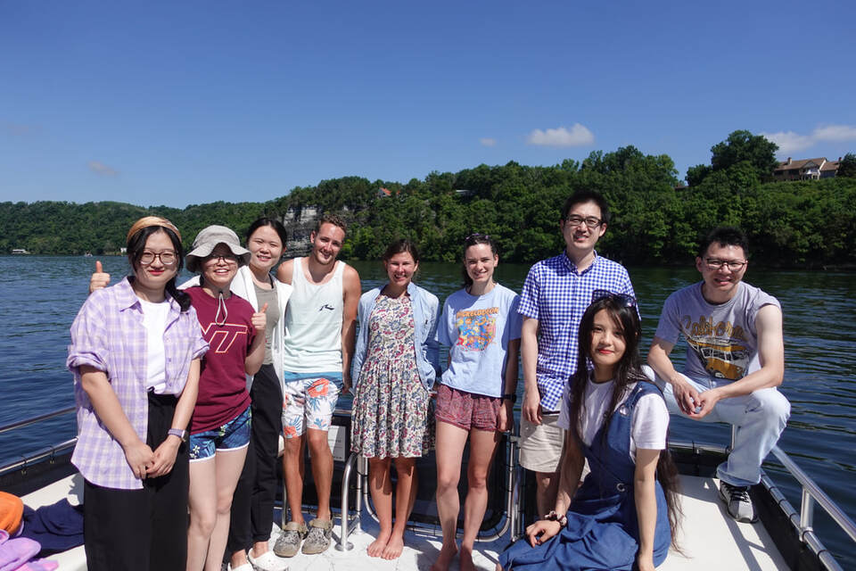
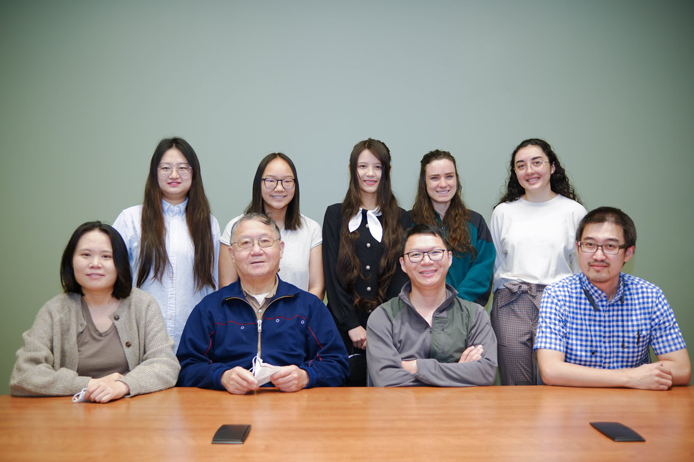
Principal Investigator
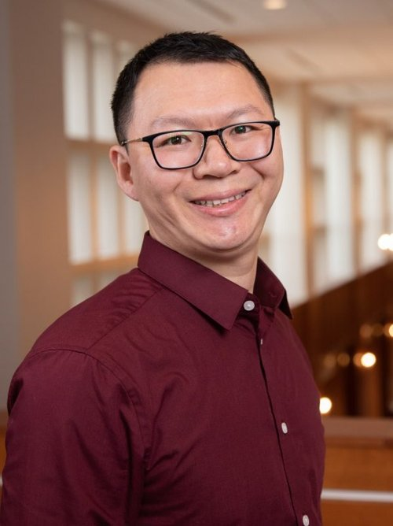
Haibo Huang, Ph.D.
Department of Food Science and Technology
Department of Biological Systems Engineering (affiliated)
Virginia Tech
Education
Ph.D., University of Illinois at Urbana-Champaign, 2013
M.S., University of Arkansas, 2009
B.S., Zhejiang University, 2007
Current Members
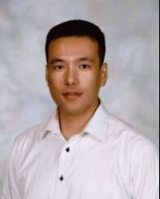
Xuanbo Liu, Ph.D.
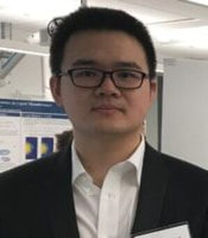
Hongchen Shen, Ph.D.
Hyukjin (John) Kwon
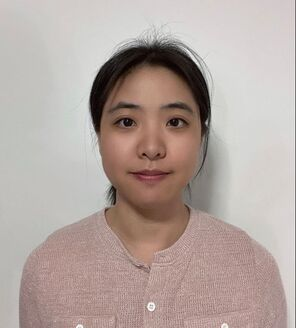
Wenxing Liu, Ph.D.
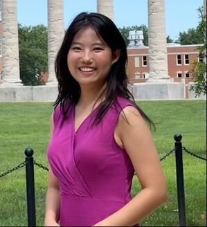
Jung Mun (Journey) Yang
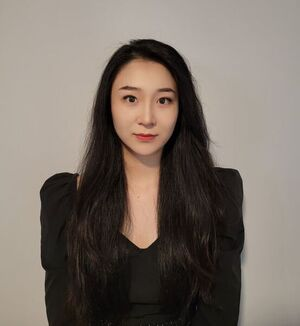
Fujunzhu Zhao
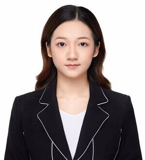
Ruoshi Xiao
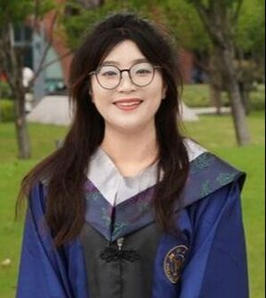
Shuo Jiang
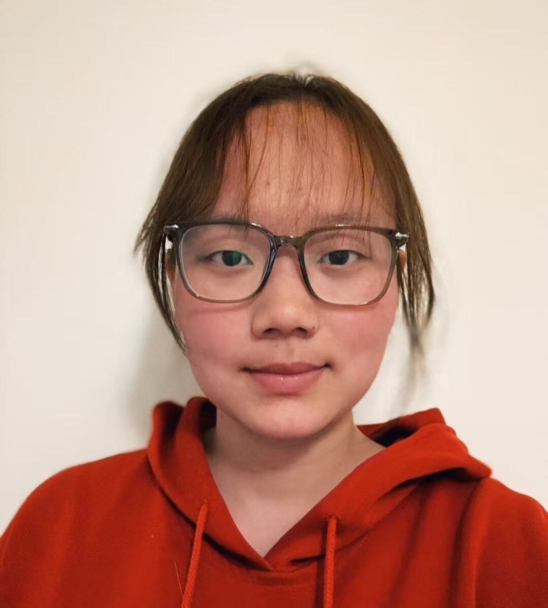
Lihong Yang
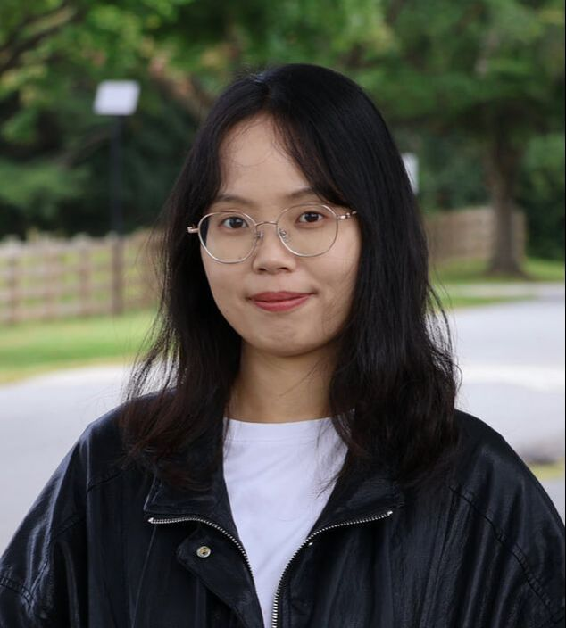
Sirui Chen
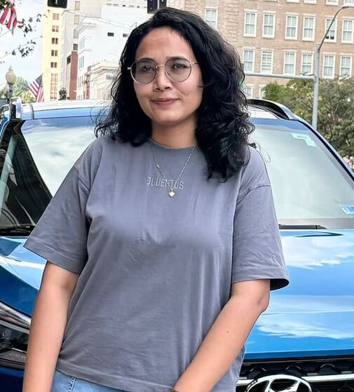
Tasrova Sultana
Alumni
Postdoctoral Researcher
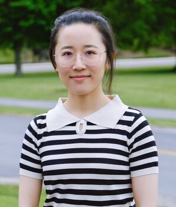
Xueqian Su, Ph.D.
John Wu, Ph.D.
Joshua O'Hair, Ph.D.
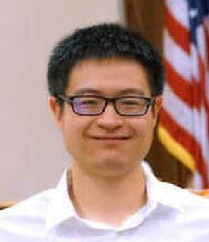
Yiming Feng, Ph.D.
Ph.D. Student
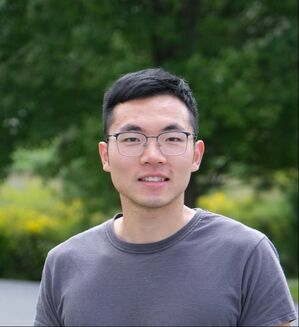
Zhiyuan (Zane) Xu
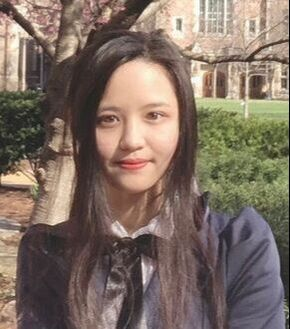
Yilin (Mico) Li
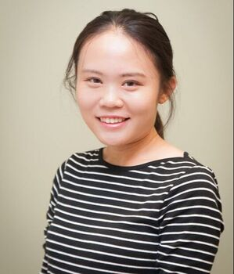
Qing Jin, Ph.D.
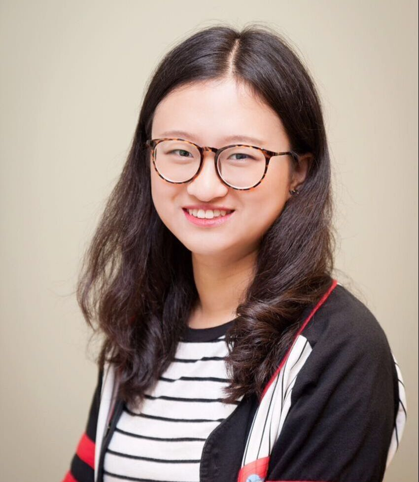
Dajun (Daisy) Yu, Ph.D.
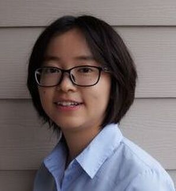
Yanhong (Ellen) He, Ph.D.
M.S. Student
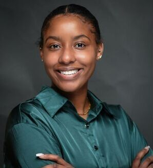
Dacia Ringo
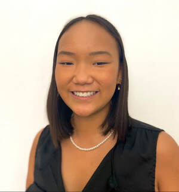
Jordan Allen
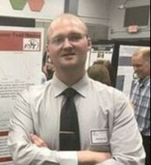
Nicholas Poe
Undergraduate Researcher
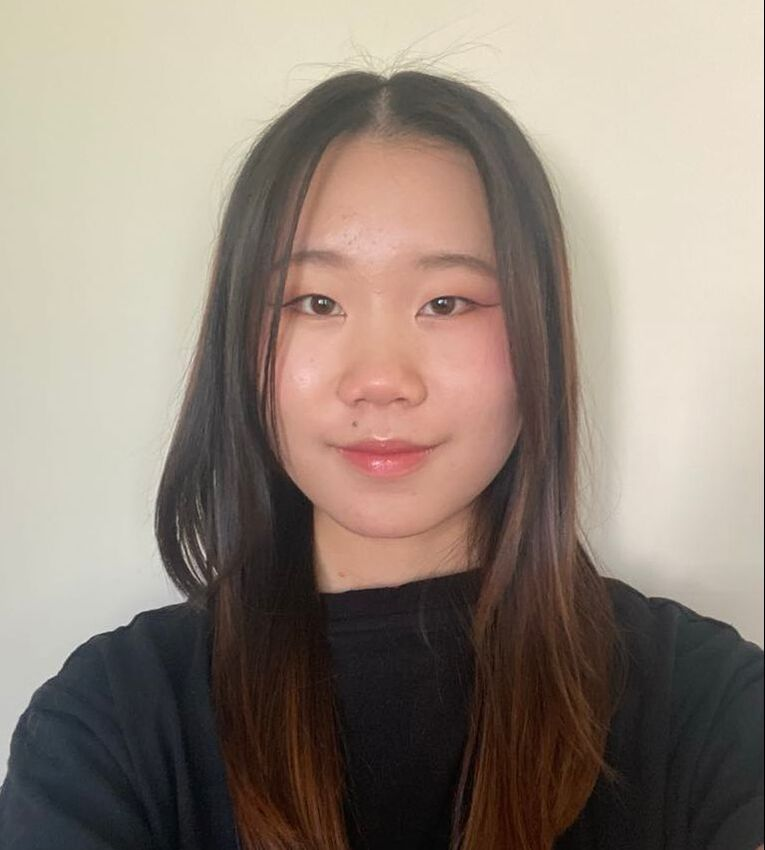
Lily Metrinko
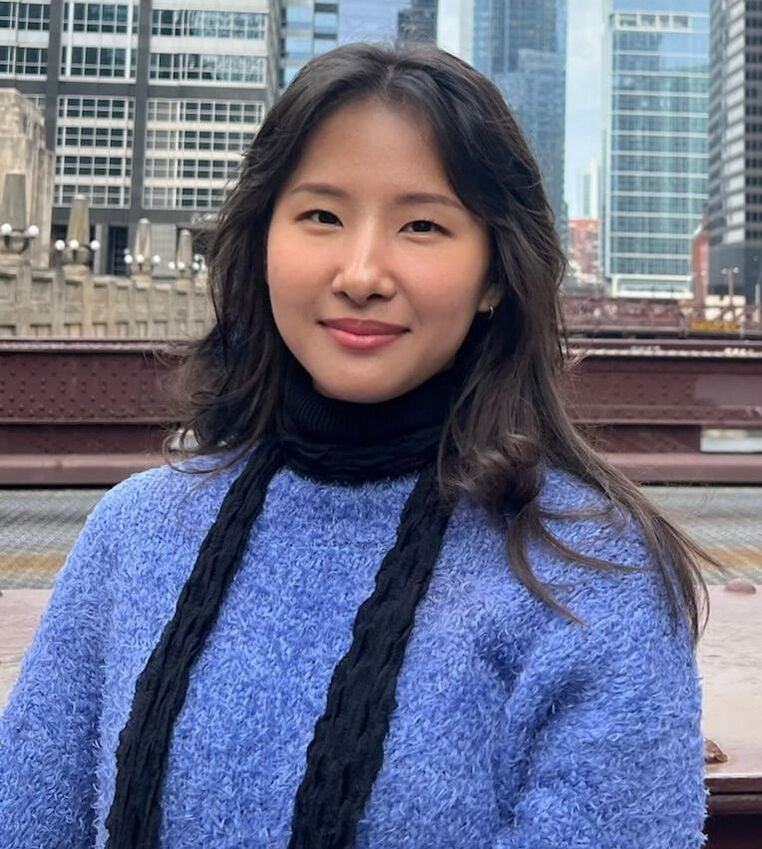
Stella Yoon
Troy Walker
Eva Arnade
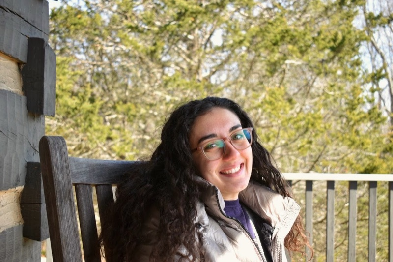
Ronnie Difulvio
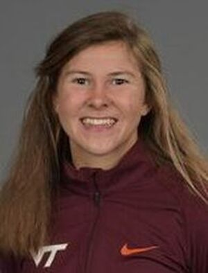
Katy Lobeda
Patrick Reilly
Sophie Pinton
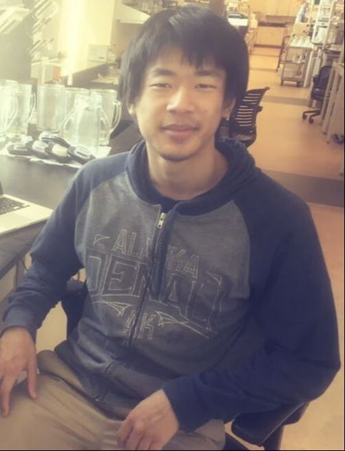
Jack Jiang
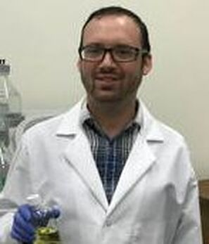
Jeff Wilder
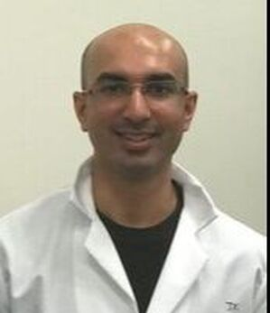
Jasim Khan
Recognitions & Awards
We are proud of our group members' recognitions and awards.
- Mico Li, Student Oral Presentation Award, ASABE International Meeting, 2024.
- Mico Li, Student Poster Presentation Award, ASABE International Meeting, 2024.
- Troy Walker & Patrick Reilly, 2nd place in student research presentation (undergraduate category), IFT International Meeting, 2024.
- Zane Xu, 3rd place in student research oral competition (Food Packaging Division), IFT International Meeting, 2023.
- Zane Xu, 3rd place in student research presentation (first year graduate category), Food Science Departmental Annual Research Competition, 2023.
- Eva Arnade & Troy Walker, 2nd place in student research presentation (undergraduate category), IFT International Meeting, 2023.
- Andrea Johnson, Finalist in student research oral competition (Food Packaging Division), IFT International Meeting, 2022.
- Daisy Yu, 3rd place in student research presentation (graduate category), Food Science Departmental Annual Research Competition, 2022.
- Andrea Johnson, 2nd place in student research presentation (first year graduate category), Food Science Departmental Annual Research Competition, 2022.
- Daisy Yu, Extra Mile Award, Virginia Tech Department of Food Science and Technology, 2022.
- Qing Jin, Founder Scholarship, Phi Tau Sigma Honor Society, 2022.
- Daisy Yu, Gideon E. Livingston Scholarship, Phi Tau Sigma Honor Society, 2022.
- Katy Lobeda, 3rd place in student research presentation (undergraduate category), IFT International Meeting, 2021.
- Daisy Yu, Finalist on student research poster competition, IFT International Meeting, 2021.
- Ellen He, Finalist on student research poster competition, IFT International Meeting, 2021.
- Daisy Yu, 3rd place in student research presentation (graduate category), Food Science Departmental Annual Research Competition, 2021.
- Qing Jin, Outstanding Ph.D. student for the College of Agriculture and Life Sciences, Virginia Tech, 2021.
- Katy Lobeda, 1st place in student research presentation (undergraduate category), Food Science Departmental Annual Research Competition, 2021.
- Katy Lobeda, 2nd place in student research presentation (undergraduate category), Food Science Departmental Annual Research Competition, 2020.
- Qing Jin, 1st place in student research presentation (graduate category), Food Science Departmental Annual Research Competition, 2020.
- Ellen He, Graduate student proposal winner, Southern Region of Sustainable Agriculture Research & Education, 2019.
- Ellen He, 1st place in student poster presentation, S1075 Multi-State Meeting, 2019.
- Daisy Yu, Best Student Oral Presentation, ASABE International Meeting, 2019.
- Sophie Pinton, 1st place in student poster presentation (undergraduate category), Food Science Departmental Annual Poster Competition, 2019.
- Qing Jin, 1st Place in Ph.D. Research Award, Virginia Tech Chapter of Sigma Xi, 2019.
- Daisy Yu, Finalist on student research poster competition, IFT International Meeting, 2018.
- Nick Poe, Finalist on student research poster competition, IFT International Meeting, 2018.
- Qing Jin, 1st place in student poster presentation, Food Science Departmental Annual Poster Competition, 2018.
- Daisy Yu, 2nd place in student poster presentation, Food Science Departmental Annual Poster Competition, 2018.
- Nick Poe, Outstanding First Year Graduate Student Award, Department of Food Science and Technology, Virginia Tech, 2018.
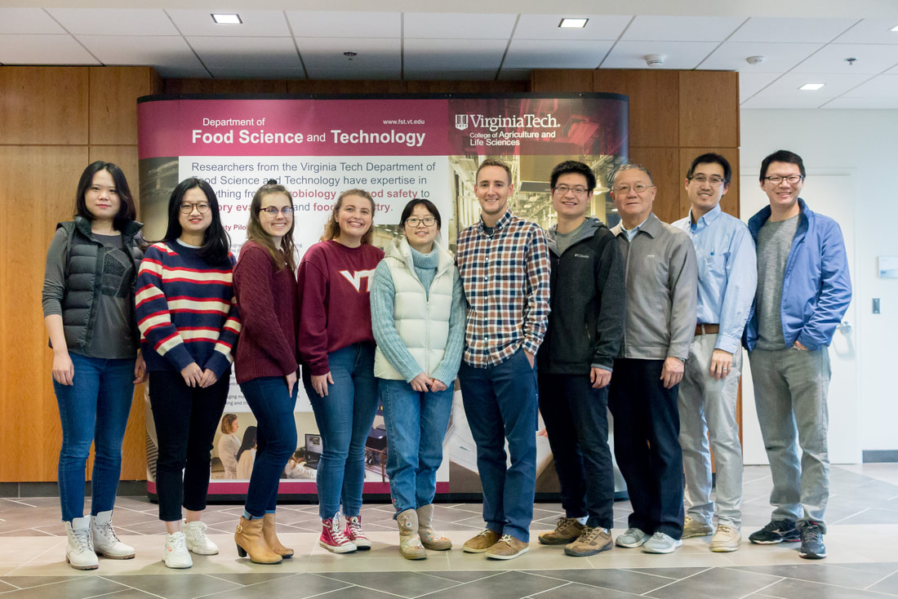
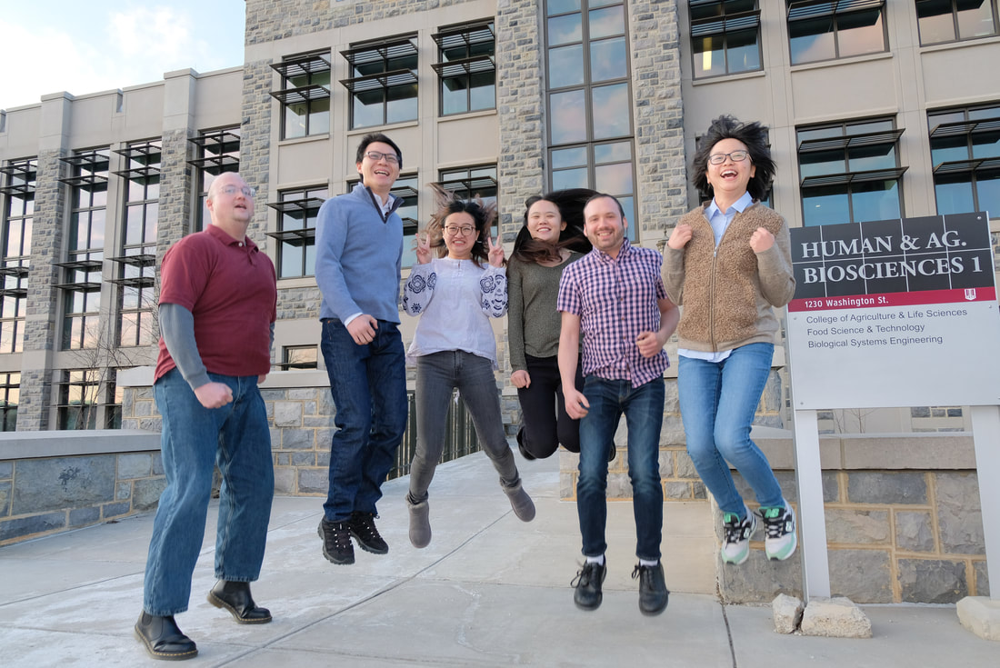
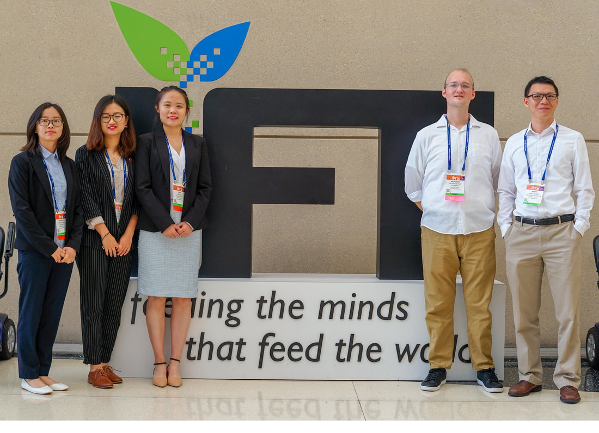